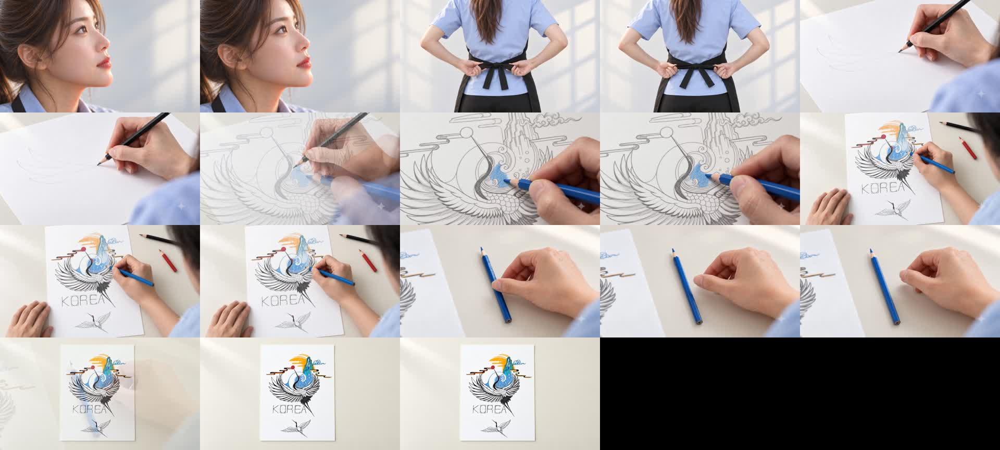

홈페이지 · 스토리보드V8 · 느린 손동작과 작품 단독 엔딩
1280 × 720 · 24fps · 약 18.5초
손 장면만 원본의 50~60% 속도로 조정했습니다. 그 외 장면은 기존 속도를 유지합니다.
추가 Flow 생성 2회 × 7크레딧 = 14크레딧 / 잔여 263개
수정 내용
완성작은 도구 없이 화면 중앙에 한 장만 배치하고, 조금 더 멀리 본 구도로 여백을 늘렸습니다. 채색 장면의 도구는 서로 다른 각도와 간격으로 놓았고, 연결 클로즈업에는 사용한 파란 색연필 하나만 남겼습니다.
연필 첫 선과 첫 파란색 장면은 짧은 동선을 골라 50% 속도로, 부분 채색과 색연필 놓기는 새로 생성한 앞부분을 60% 속도로 사용했습니다. 손이 다시 돌아오는 후반 동작은 제외했습니다. 속도를 낮출 때 생기는 끊김은 중간 프레임 보간으로 완화했습니다.
생성 영상의 연필 접점·안료 변화가 실제 촬영처럼 완벽하게 일치한다고 보장할 수는 없습니다. 이 버전은 속도·동선·배치·엔딩을 수정한 비교용 결과물입니다.
편집·비용 기록 · 이미지 JSON 프롬프트 · 영상 JSON 프롬프트 · 이전 V7
